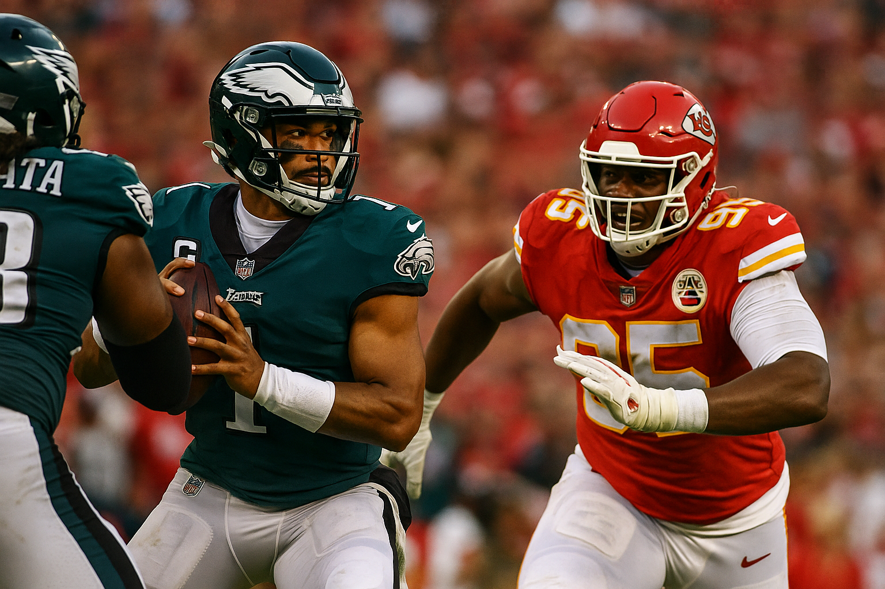

Week 2 Full-Board Deep Dive: Every Matchup, Lines, Totals & Context
Posted: September 10, 2025, 4:55 PM ET


DraftKings lists Green Bay -3.5 with a total of 48.5. That’s a modest edge for the Packers at home in primetime and suggests both offenses are expected to move the ball.
Washington’s offense leaned on timing and early‑down throws in the opener; Green Bay’s front created pressure with four and stayed healthy across its core rotation heading into Week 2 prep.
Lambeau in September is usually calm and dry, so environment tends to favor clean execution. Short‑week travel can amplify communication issues for visiting offensive lines.


Cincinnati sits -3.5 with a total at 48.5 on DraftKings, a mid‑high total for the early window.
Jacksonville paired quick game with play‑action in Week 1 while keeping the protection plan simple. Cincinnati’s defense lives in two‑high shells and forces long drives without explosives.
Paycor can play fast when weather is warm. Expect both teams to test underneath windows and take measured shots off play‑action when safeties flatten.


DraftKings has Dallas -5.5 with a total of 44.5. Market has been steady in the -5 to -6 pocket.
The Giants’ pass protection is still the storyline. Dallas’ rush generated pressure with four in Week 1 and continues to rotate deep up front.
AT&T Stadium’s controlled environment keeps everything on schedule. This rivalry often swings on third‑and‑medium conversions and red‑zone finish rate rather than raw yardage totals.


Detroit is -5.5 at DraftKings; total 46.5. That nods to a moderate scoring expectation in a dome.
Chicago’s offense seeks smoother early‑down sequencing after a choppy opener. Detroit’s offensive line remains the identity piece for its play‑action and gap runs.
Ford Field removes weather variables. Crowd noise here has historically impacted visiting snap timing and penalties.


The Rams lay 5.5 with a total of 41.5 on DraftKings, one of the lower totals on the board.
Los Angeles leveraged motion and condensed splits in Week 1 to create easy throws. Tennessee’s reworked offense is still settling protections around a young quarterback.
Outdoor conditions in Nashville can be hot in mid‑September, which stresses defensive depth and tackling late.


Miami is a short -1.5 favorite with a 44.5 total at DraftKings, which implies a tight contest with moderate scoring.
New England’s front played the run well in Week 1 while Miami’s passing structure still forces defenses to cover every blade of grass.
South Florida humidity is a factor for substitution patterns. Special teams and hidden yards often tip these matchups in Miami.


DraftKings has San Francisco -4.5 with a 42.5 total. The number tightened earlier in the week as the QB picture came into focus.
Brock Purdy is considered a long shot for Week 2 with toe and shoulder issues, and George Kittle has been placed on injured reserve. New Orleans leans on coverage disguise and veteran safeties in passing downs.
The Superdome neutralizes weather and typically boosts operational tempo. Expect a trench‑centric game state with both teams leaning on run action.


Buffalo -7 with a 46.5 total at DraftKings is one of the larger spreads on the Week 2 card.
Buffalo exited Week 1 healthy among primary pass‑catchers and Josh Allen’s off‑script creation remains a separator. The Jets’ defense is still the backbone while their offensive line continues to settle.
MetLife winds can influence deep balls and long field goals. Patience underneath and scramble drills have been Buffalo’s answers to the Jets’ split‑safety looks.


DraftKings lists Pittsburgh -3 with a 40.5 total, one of the week’s lowest totals.
Seattle used quick game and a split backfield in Week 1. The Steelers generated pressure with four and rarely had to expose coverage with heavy blitz.
Lower totals make hidden yardage matter more. Field position and special teams tend to swing close games in this building.


Baltimore is -12.5 with a 45.5 total at DraftKings, the heaviest spread on the board.
Cleveland’s young offense needs efficient early downs to avoid Baltimore’s simulated pressures and post‑snap rotation. The Ravens’ depth on defense and diverse run game show up more at home.
Division meetings often come down to turnover margin. Baltimore’s recent series edge has leaned on short fields and red‑zone defense.


Denver -2.5 with a 42.5 total at DraftKings projects a tight, mid‑low scoring game.
Denver’s second‑level range showed up in Week 1 and the defense mixed simulated pressures on passing downs. Indianapolis uses QB run and RPO to stay ahead of the sticks.
Indoor track means fewer weather surprises. Third‑down distance and red‑zone calls will shape the outcome more than yardage volume.


Arizona -6.5 with a 44.5 total at DraftKings reflects confidence in their home offense against a Carolina unit still searching for explosive plays.
Carolina emphasized quick throws and screens in Week 1 to stabilize the pocket. Arizona mixed tempo and used multiple backs to keep leverage on linebackers.
Fast indoor surface supports pace. If turnovers stay down, third‑down execution becomes the lever for both sides.


DraftKings lists Philadelphia -1.5 with a 46.5 total for the Super Bowl LIX rematch. Kansas City being a home underdog is rare.
Kansas City is without Rashee Rice for six games and is managing Xavier Worthy’s shoulder from Week 1 in Brazil. Philadelphia’s Wednesday report included Dallas Goedert as a DNP and Landon Dickerson limited.
Kansas City’s Week 1 involved long‑haul travel to São Paulo, which compresses recovery. Recent meetings have hinged on trenches and turnover margin, not yardage alone.


Minnesota -3.5 with a 44.5 total on DraftKings. The spread toggled between -3 and -3.5 during the week.
Atlanta monitored receiver availability after Week 1. Minnesota leaned into three‑wide sets and option routes with a rookie quarterback comfortable in tempo.
U.S. Bank Stadium’s fast track and acoustics favor the home cadence. Explosive‑play prevention versus third‑and‑medium wins is the chess match.


Houston -2.5 with a 42.5 total at DraftKings indicates a lower‑variance profile under the roof.
Tampa Bay relies on four‑man pressure and match coverages; Houston’s intermediate rhythm looked sharp in Week 1 with a stable target tree.
In a controlled environment, pass‑protection and third‑down blitz pickup usually decide drive value more than raw yardage totals.


The late Monday cap has Los Angeles -3.5 with a 46.5 total at DraftKings.
Justin Herbert opened the season with vertical intent while the Raiders leaned on a physical ground game. Midweek injury notes focused on rotational defenders for both teams.
Allegiant’s fast track benefits timing routes. These AFC West games frequently swing on penalties and two‑minute execution.